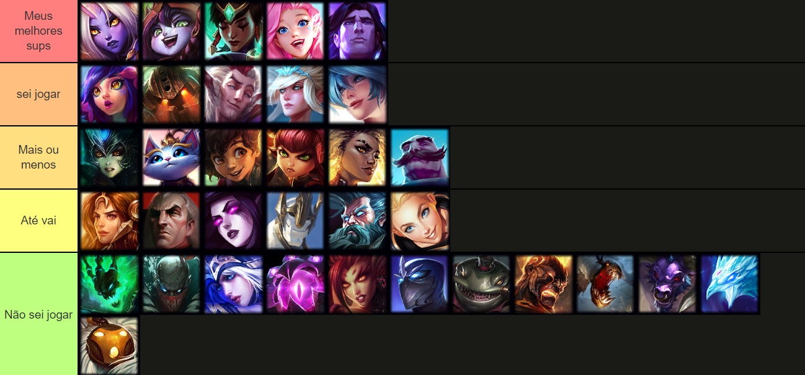

Olá, Invocador!!!
Hoje eu serei sua suporte, pode me chamar de Cammy! <3 ~~(>--<)~~ .
A seguir vai algumas informações sobre como é jogar comigo:
- Sou muito tranquila jogando e não dou rage, então pode ficar suave;
- geralmente mantenho o chat e os pings ligados pra manter a comunicação, porem se me pingarem desnecessáriamente ou darem rage em mim, fique sabendo que o /muteall vai ser ativado!!!;
- se quiser ficar em chamada para conversar e passar call, esse é meu server: Fundo do Poço;
- Esse é o meu op.gg caso queira dar uma olhada: Link do meu OP.GG;
- Essa é minha pool atual, sinta-se a vontade para pedir pick;
